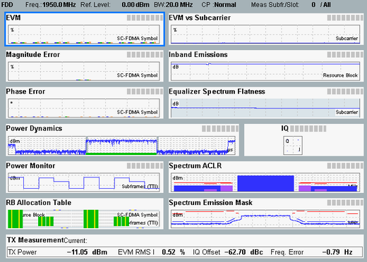
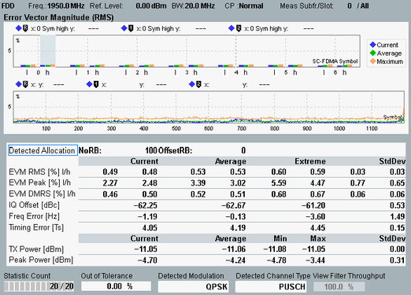

Measurement Results
The results of the LTE multi-evaluation measurement are displayed in a single overview and one detailed view for each part of the overview.

Result overview
Most of the detailed views show a diagram and a statistical overview of single-slot results.

Error Vector Magnitude result view
For a detailed description of all result views, see "Measurement Results".
All commands for result query start with FETCh, READ or CALCulate and continue with :LTE:MEAS<i>:MEValuation:. A TRACE in the remainder indicates that a measured curve is queried. Bar graphs and tables are queried without TRACE.
Examples:
- FETCh:LTE:MEAS<i>:MEValuation:TRACe:EVMC?
- READ:LTE:MEAS<i>:MEValuation:PERRor:CURRent?
- CALCulate:LTE:MEAS<i>:MEValuation:ACLR:AVERage?
For links to the relevant command reference sections, refer to the result view descriptions in "Measurement Results".